This post has been written and produced by Emilie Ens from Macquarie University, Sydney.
Over the last couple of years the ALA has been working with the Yugul Mangi Rangers and Macquarie University ecologists to build cross-cultural biodiversity knowledge of SE Arnhem Land. Additionally the collaboration has helped develop Indigenous content in the ALA website and raise awareness nationally, about Indigenous science and biodiversity management. The team has just published a paper called “Putting Indigenous Conservation Policy into practice delivers biodiversity and cultural benefits“.
In July 2016, the team held a regional woman’s biodiversity and cultural knowledge sharing workshop at Ngilipitji in eastern Arnhem Land. Thirty five women attended from the three ranger groups in the region (Yugul Mangi Rangers from Ngukurr, Yirralka Rangers from Yirrkala and Numbirindi Rangers from Numbulwar) as well as the Ngukurr Yangbala (Young) Rangers. Ngilipitji was chosen as a mid-way point for the groups and because it lies close to the border of the Laynhapuy Indigenous Protected Area (managed by the Yirralka Rangers) and the proposed SE Arnhem Land Indigenous Protected Area (managed by the Yugul Mangi and Numbirindi Rangers under the Northern Land Council) and is considered a “shared management” zone.
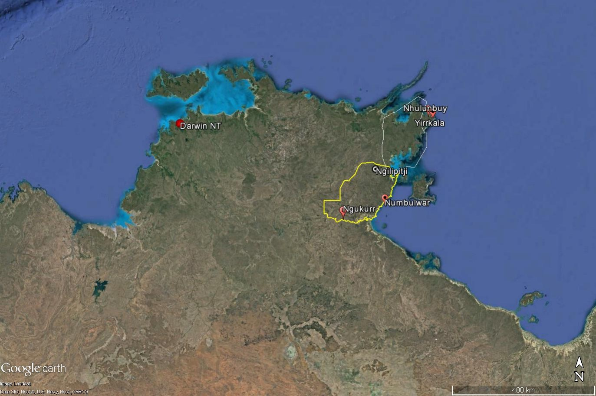
Cultural knowledge sharing workshops were held in Ngilipitji, Arnhem Land.
The team conducted biodiversity surveys over three days and nights in an area that according to ALA data, had not been surveyed in the past. We set up 70 Elliot, 15 Cage, 6 Pitfall, 15 Funnel and 12 camera traps over three sites (Rocky hill, Bottom spring, Top spring) to detect mammals and reptiles. We conducted one night search around the outstation for geckoes, did plenty of fishing and made opportunistic sightings of species. Despite the remoteness of this Country, surprisingly we only found 4 skinks (Carlia munda, Cryptoblepharus metallicus), 5 geckoes (Gehyra australis, Heteronotia binoei), 2 water rats (Hydromys chrysogaster), 2 dingoes (Canis lupus dingo), 3 crows (Corvus orru), 8 Black Bream (Hephaestus fluiginosus) and freshwater crocodile’s (Crocodylus johnsoni) eyes shining at night in the creek. One feral cat, 2 cane toads and evidence of feral buffalo and pig were also seen. We found no frogs, small mammals, large reptiles or turtles. The lack of animal sightings was suggested as due to the weather being cold and at times windy and raining. However the presence of feral animals and possibility of past damaging late dry season wild fires were also discussed as possible causes.
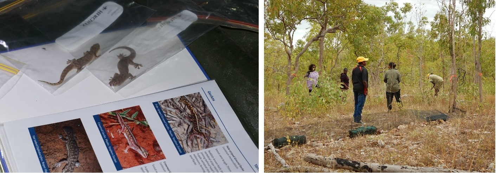
Left: Identifying geckoes using our local multilingual field guide; Right: Setting up Funnel traps at the rocky site.
At each site we did plant collections, pressed specimens and are still processing and identifying the species. However about 50 species were recorded, all were commonly known. Some lively knowledge exchange occurred around the plant species. The common medicinal plant Eucalyptus tetrodonta was called bambuja by the SE Arnhem mob and gadayka by the NE Arnhem ladies. All grasses were called wiji in Marra, mulmu in Yolngu matha and notho in Ngandi languages. The large Acacias (Acacia auriculiformis and A. aulacocarpa) were described as dukul in Ngandi, Ritharrngu and Ngalakan (SE Arnhem languages) and dhurrtji in Yolngu matha (NE Arnhem). Despite being relatively close in proximity, there were clear differences in language words for plants between SE and NE Arnhem Land.
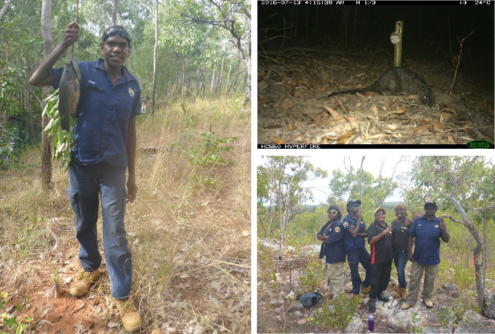
Left: Maritza Roberts with catch of Black bream; Right top: Water rats caught on camera; Right bottom: Dana Gumbula, Maritza Roberts, Justine Rogers, Jane Hall and Megan Wilfred.
In addition to exchange of language names and uses knowledge, senior Ngandi woman Cherry Wulumirr Daniels also facilitated cultural leadership and kinship discussions throughout the camp with her usual passion and command of everyone’s attention. On the last night, the Yirralka Rangers shared with everyone a cultural song and dance (manikay) about Ngilipitji that was recorded by their family members. They also taught the group a range of other songs and dances that often had environmental themes. This was followed by cultural performances and lessons from the Numbirindi Rangers and Ngukurr mob.
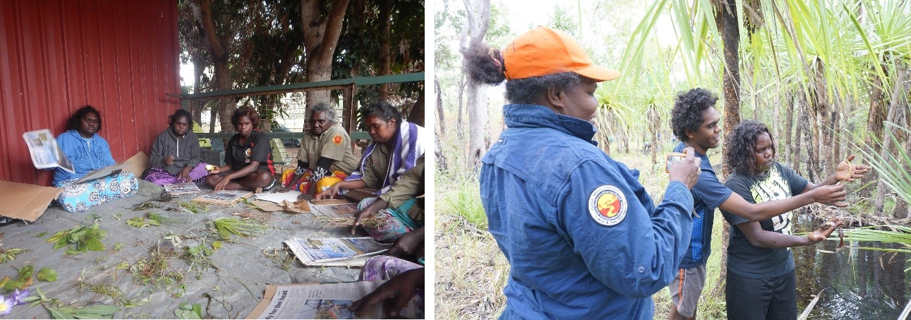
Left: Pressing plants at Ngilipitji outstation; Right: Julie Roy taking photos of Kiefer Hall and Janita Russell collecting bush food plants.
After the camp the Yirralka Rangers came to Ngukurr, many for the first time, and participated in an ALA workshop led by Rebecca Pirzl with input from Julie Roy, Yugul Mangi senior woman ranger. We downloaded the camera trap photos and shared all photos and videos with each other.
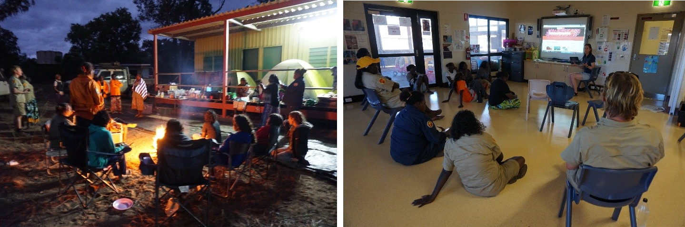
Left: Cultural exchange by Yirralka Rangers; Right: Learning about the ALA back at Ngukurr.
All the ladies had a fantastic time learning from each other and experiencing Country that many had never been to before. Although we only found a few animal species and common plant species, they were all significant records due to the lack of surveys in this area in the past. The knowledge exchange was deemed a success with annual exchanges and the need for more cross-cultural biodiversity surveys discussed.
Article
2016 ALA Science Symposium - Thank you
Last week, 11-13 May 2016, the ALA and WA’s Department of Parks and Wildlife hosted over 120 people for our third ALA Science Symposium. There were more than 40 stimulating presentations, three workshops and many (too many to count) lively discussions.
These ALA symposiums are proving to be an excellent way to meet up with our users and partners and to discuss opportunities for improvement and further collaboration. At each symposium I am impressed by the diversity of research, industry and community groups that engage with and enrich ALA content.
Thank you to our colleagues at WA’s Department of Parks and Wildlife for their hospitality and providing such a great venue. Thank you also to the presenters, moderators, contributors, our hard-working ALA staff, and all the delegates, for making this such a successful event.
Look forward to seeing you all at the next one!
John La Salle
Director, Atlas of Living Australia
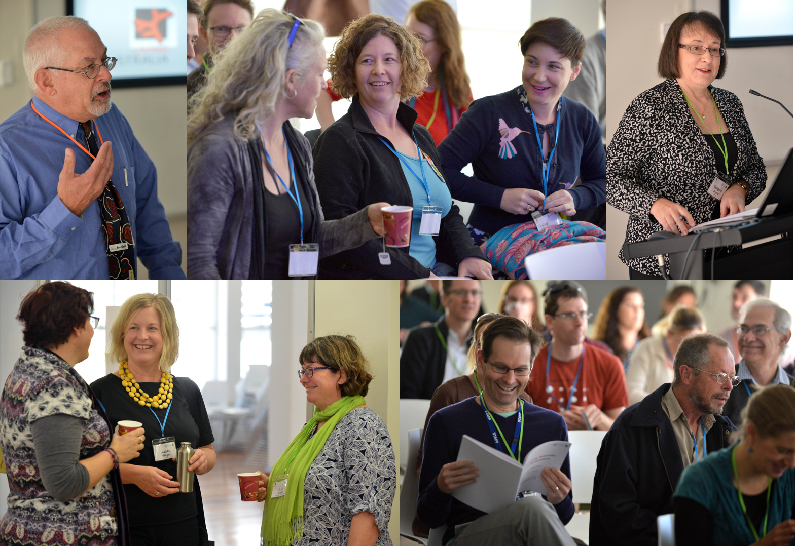
Participants at the 2016 Atlas of Living Australia Science Symposium. Clockwise from top left: John La Salle (Director, ALA); Ryonen Butcher (Parks and Wildlife), Helena Mills (EPA) and Claire Stevenson (EPA); Dr Margaret Byrne (Director of Science and Conservation, Parks and Wildlife); Kelly Shepherd (Parks and Wildlife), Juliet Wege (Parks and Wildlife) and Lyn Cook (University of Queensland); Ben Richardson (WA Herbarium), Colin Crane (Parks and Wildlife) and Terry Macfarlane (Parks and Wildlife).
Article
ALA Science Symposium 11-13 May 2016 – new workshops added to program
ALA Workshop: Mapping Evolutionary Diversity for Biodiversity Conservation with Dan Rosauer
Tuesday 10 May 9.00am - 5.00pm
Dan Rosauer, a Research Fellow in the Centre for Biodiversity Analysis, Research School of Biology at Australian National University in Canberra, will run a hands-on workshop exploring how the Atlas can assist in using a phylogenetic approach to conservation.
Spaces are limited, so click here to register now.
ALA Workshop: Features and Functions of the Atlas’ Spatial Portal with Lee Belbin
Friday 13 May 9.00am - 12.30pm
There are a wealth of functions and data associated with The Spatial Portal of the Atlas of Living Australia, but many users are unaware of its potential. This workshop will introduce the key features, and also seek feedback on other community needs.
Spaces are limited, so click here to register now - REGISTRATIONS NOW CLOSED
ALA User Workshop
Friday 13 May 9.00am – 3.00pm
Feel free to drop in to an all day workshop where several ALA staff members will be available to provide tutorials, explain various functions, and answer questions – think of it as the ALA genius bar.
No registration required – just drop by with your questions.
The ALA Science Symposium will be held at Keiran Macnamara Conservation Science Centre, 17 Dick Perry Avenue, Kensington, Perth, WA, from 11-13 May 2016. Registration is free.
Click here to register to attend the 2016 ALA Science Symposium and submit an abstract.
For further information, including links to local accommodation and travel awards, click here.
Article
One step closer to global citizen science discovery
Discovering and connecting with citizen science projects at a global scale has never been closer to reality than now! Over the past few months the teams at SciStarter (www.scistarter.com – based in the USA) and the Atlas of Living Australia (www.ala.org.au - ALA) have been collaborating to enable project information about citizen science projects to be shared between the two systems so that people can easily find and connect with citizen science activities wherever they may be operating, and regardless of which system the projects were registered in.
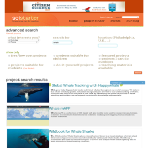This has been a dream of many people for a long time. Over the last 10 years or so, several different project discovery platforms have evolved independently around the world and the internet allows people anywhere to register their projects on any of the platforms. However, it has been becoming increasingly difficult and confusing for people to find and connect with projects of interest to them in their local areas because the systems have not been connected with each other. Often thing aren’t easy though and connecting them up has proven to be pretty challenging due to incompatibility of data structures and differences in the level of technical development in different platforms.
SciStarter and www.CitSci.org have been sharing project information within the USA for a few months already, but the connection with the ALA is the first successful international connection. The ALA is Australia’s national biodiversity data aggregation system and provides hosted web-based infrastructure to support people in Australia running biodiversity related citizen science projects including the collection of standards-based biodiversity data.The BioCollect system (http://www.ala.org.au/biocollect/) provides both a project register tool to help connect people with projects, as well as a powerful and flexible data collection facility for those who want to use it.
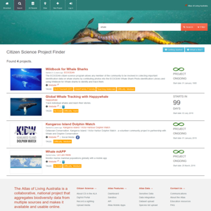The Australian Citizen Science Association (www.citizenscience.org.au - ACSA) and European Citizen Science Association (www.ecsa.citizen-science.net - ECSA) are also working towards providing discovery and access points for citizen science projects at a continental level. To facilitate this and related goals, the Woodrow Wilson International Center for Scholars in Washington DC is also leading an international data and metadata working group in conjunction with the American Citizen Science Association (www.citizenscienceassociation.org - CSA), ECSA, ACSA and the Open Geospatial Consortium (www.opengeospatial.org - OGC) to develop a data interchange standard for citizen science project information (https://www.wilsoncenter.org/article/ppsr-core-metadata-standards). It is anticipated that this will enable other platforms to also begin connecting up to share their project information too.
According to Anne Bowser, coChair of the data and metadata working group and Senior Program Associate at the Wilson Center, “The international connection between SciStarter and ALA will heighten our awareness of the range of citizen science projects operating on different geographic sales. This is a huge step towards building a global community of citizen science researchers and practitioners, and will pave the way for new research collaborations and partnerships”.
Article
Reminder: ALA Science Symposium 11-13 May 2016, Perth
Register now – places are filling up.
Call for abstracts closes 15 April.
Have you used the Atlas of Living Australia in your recent research project? Are you keen to know more about the range of research enabled by the Atlas?
Come to the symposium to present your experience or to learn more about what the Atlas can do.
The symposium agenda will include abstracts, posters and speed talks running on Wednesday 11 and Thursday 12 May. Workshops to demonstrate Atlas capabilities will be held on Friday 13 May.
What: The 3rd Atlas of Living Australian Science Symposium
When: Wednesday 11 - Friday 13 May 2016
Where: Keiran McNamara Conservation Science Centre, 17 Dick Perry Avenue, Kensington, Perth
Cost: Free (travel assistance is available for some participants)
Please register to attend the 2016 ALA Science Symposium and submit an abstract.
For further information, including links to local accommodation and travel awards, click here.
Submission of abstracts for oral presentations will close Friday 15 April 2016.
Submissions of posters and speed talks will close Friday 29 April 2016.
Article
ACT Gang-gang survey a great success enabled by the ALA
Gang-gang (image credit: Tegan Liston)
COG developed an exciting citizen science project, the Gang-gang survey, to enlist the help of the community to collect information about the Gang-gang cockatoo. Mr Chris Davey, the survey project manager said COG was keen to introduce a wider audience to the fun of birdwatching and spark their interest in learning more about native birds and their habitat.
“Reaching this audience was greatly enabled by the development of the on-line web portal for the survey by the Atlas of Living Australia (ALA)” Mr Davey said. Members of the public were able to register and log casual sightings of the Gang-gang in the database. “It also helped that the Gang-gang is a charismatic bird, easily-recognised by its squeaky gate call and plumage” Mr Davey said.
The community response to the survey was outstanding with over 4,000 sightings logged in the ALA database and over 300 on-line participants by the end of the 12 month survey in February 2015. Ms Kathy Eyles, the survey communications manager said “Most of the survey participants were not COG members and we are excited that for many local people, this was their first foray into citizen science!”
Positive local media coverage of the survey project and also widespread affection and concern for the Gang-gang Cockatoo provided a focal point for community participation. Ms Eyles said there was plenty of positive feedback from participants. “We asked observers why they got involved in the survey and most said they were keen to help a project to learn more about the Gang-gang and really enjoyed watching out for these gorgeous birds in their gardens and local reserves”.
“I’ve wanted to get involved in citizen science - this is the first time I’ve been involved!”
“Survey made my walks more interesting and an interesting bird”
“I feel I can help protect them by logging them in the survey”
“Gang-gangs are interesting attractive birds and I’m worried about their decline”
“Proud to see them in my garden”
Gang-gang (image credit: Tegan Liston)
“Importantly, we were also able to use the feedback from participants to identify a number of survey design and communication lessons for future citizen science projects” Ms Eyles said.
Mr Chris Davey the survey project manager said, the survey results reveal that the Gang-gang cockatoo has an interesting and non-random distribution within the region. “In urban Canberra for example, you are more likely to see the Gang-gang in suburbs bordering the forested nature reserves of Mt Majura and Mt Ainslie, Gossan Hill, Bruce and O’Connor Ridges, Black Mountain, Aranda Bushland to the north of Lake Burley Griffin and Red Hill and Mt Taylor to the south” Mr Davey said.
While the survey provided much needed information on the distribution and behaviour of Gang-gangs, it was not able to provide information on movement patterns that would help determine the number of Gang-gangs in the local region.
COG is now talking with the ANU Fenner School about a doctoral research project to build on the survey results. This research would track movement, possibly using marked birds, to shed light on their movement patterns in the region, and may also involve a breeding study. This means our budding citizen scientists may well be called upon again to help track the Gang-gang Cockatoo.
Copies of the survey reports are available from the Canberra Birds website: http://canberrabirds.org.au/observing-birds/gang-gang-survey/
Article
ALA Science Symposium 2016 - registrations open
Registrations are now open for the third Atlas of Living Australia Science Symposium which is being held at the Keiran McNamara Conservation Science Centre, 17 Dick Perry Avenue, Kensington, Perth from 11-13 May 2016.
You can now register to attend the 2016 ALA Science Symposium.
The main Science Symposium will be held on the 11th and 12th, with talks and posters and other activities to highlight the range of research and practical outcomes enabled by the Atlas. We will also be holding a day of ‘shoulder’ meetings on Friday 13 May 2016 as a chance to see demonstrations and tutorials of Atlas capabilities, for special interest groups to come together, or even for extra science presentations if we have a great deal of interest from presenters.
We invite you to submit an abstract for presentation at the Symposium on how you have used the Atlas in your work in one of the following categories:
- 15 minute oral presentation
- A poster
- 5 minute speed talk presenting a new idea for the Atlas.
If you wish to present at this year’s Symposium, please upload an abstract of your paper using the following link: 2016 Science Symposium - upload link for abstracts.
Further information, including links to local accommodation and travel awards, can be found on the dedicated Science Symposium webpage: https://www.ala.org.au/2016-ala-science-symposium/
Article
NSW South Coast: December 2015 BioBlitz
The Atlas of Life in the Coastal Wilderness will be running a BioBlitz in the Wallagoot catchment region near Merimbula NSW on Friday 4th and Saturday 5th of December 2015, with a basecamp situated at the Bournda Environmental Education Centre.
BioBlitzes bring scientists, naturalists, and public volunteers (Citizen Scientists) together to explore and record biodiversity information and learn about local ecological communities. This two day event will have a schools program on Friday and surveys will be happening from before dawn to after dark. Bioblitzes are a great way to be part of large-scale environmental studies within an enjoyable community atmosphere, all while gathering important regional data that can be used for research and giving an opportunity to learn about our natural environment alongside the experts.
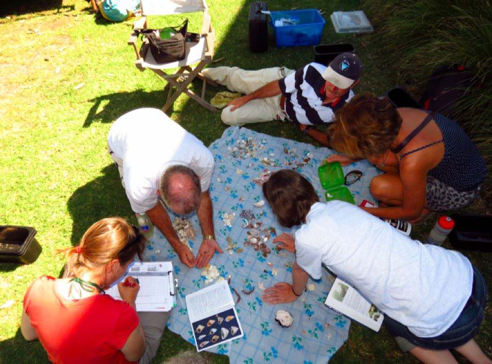
Scientists and volunteers working together to gather data and learn more about the ecosystem. Photo: courtesy of Atlas of Live in the Coastal Wilderness
The Wallagoot catchment is predominately forest or woodland with cleared land for agriculture, the Wallagoot Lake itself is an ICOLL with seagrass beds and small areas of saltmarsh. There are large areas protected in the Bournda National Park and Bournda Nature Reserve as well as Bega Local Aboriginal Land Council land and property in private ownership.
Several endangered ecological communities and a number of threatened flora and fauna species as well as a number of invasive species can be found in the area. The Kalaru/Wallagoot area is rich in fauna values, especially for the Yellow-bellied Glider, Glossy Black Cockatoo, and threatened shore and water birds. The area is a wildlife corridor allowing species to move between more and less disturbed areas.
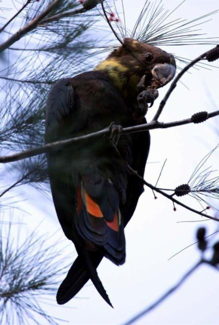
Glossy black cockatoos can be found in the region. Photo: OzAnimals via ALA species profile.
If you would like to know how you can get involved with the Wallagoot catchment BioBlitz, please visit the website or event invite.
Data and records collected from this BioBlitz will be uploaded to the Atlas of Living Australia website and openly accessible to anyone, anywhere, anytime.
Article
Phylolink to be launched at ASBS Conference 2015
The Australasian Systematic Botany Society Conference is being held in Canberra from the 29th of November until December 3rd and the theme is “Building our Botanical Capital”.
The Atlas of Living Australia is proud to be sponsoring the event and will be officially launching the new Phylolink tool. The Atlas will also be hosting a workshop and Dr Joe Miller (adjunct to the CSIRO National Research Collections Australia) will also be presenting his research on the evolution and phylogentics of the Australian plant genus Acacia (which utilised the Phylolink tool).
phylolink.ala.org.au
Phylolink allows users to explore biodiversity data from a phylogenetic (tree of life) perspective. Phylolink is a free, online, customisable research tool that gives users the ability to intersect a phylogenetic tree with species occurrence records, environmental data, and species character information for spatial mapping of traits, environmental profile plots, phylogenetic diversity calculations and more.
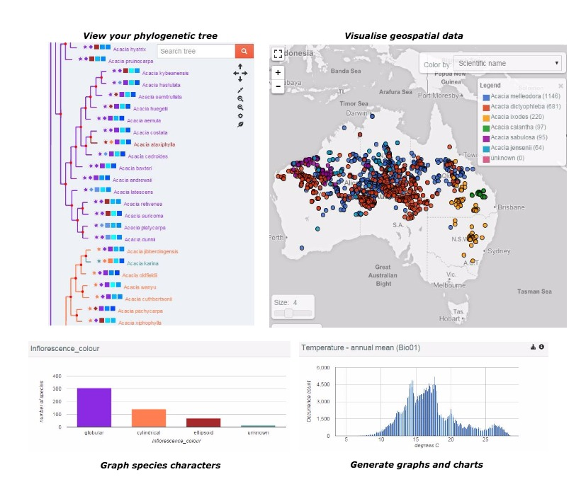
Phylolink is the result of collaboration between the Atlas of Living Australia and scientists at CSIRO, the Australian National University and the National Science Foundation (USA). Phylolink builds upon PhyloJIVE, which was developed by CSIRO, the Taxonomy Research and Information Network (TRIN), and the Centre for Australian National Biodiversity Research (CANBR).
The Australasian Systematic Botany Society (ASBS) is an incorporated association of over 300 people with professional or amateur interest in botany. The object of the Society is to promote the study of plant systematics. You can learn more about the ASBS on their website.
Article
Indigenous Ecological Knowledge: Olkola and Killarney Station
The Olkola People of Cape York, CSIRO researchers, and the Tropical Indigenous Ethnobotany Centre (TIEC) are working together; using the Atlas of Living Australia (ALA) to explore ways to share and utilise knowledge to help care for country. The project is encouraging Traditional Owners’ aspirations to be on the country, with a focus on delivering benefits to all parties involved. This ALA-supported pilot project intends to build on past and current efforts of the Olkola people to record and secure their cultural resources and aims to combine traditional knowledge with the western science currently available in the Atlas.
** This blog post has been produced with the Olkola Aboriginal Corporation **
In the first week of June, CSIRO researchers, Olkola elders and rangers, and Gerry Turpin from TIEC met on Olkola country together, at Killarney station, recording knowledge, sharing knowledge, mapping plants and animals and beginning to discuss what sharing information about country might look like. The group was based at the Killarney station homestead where we camped and travelled from daily to visit story places on Olkola country identified by the rangers and the knowledge holders.
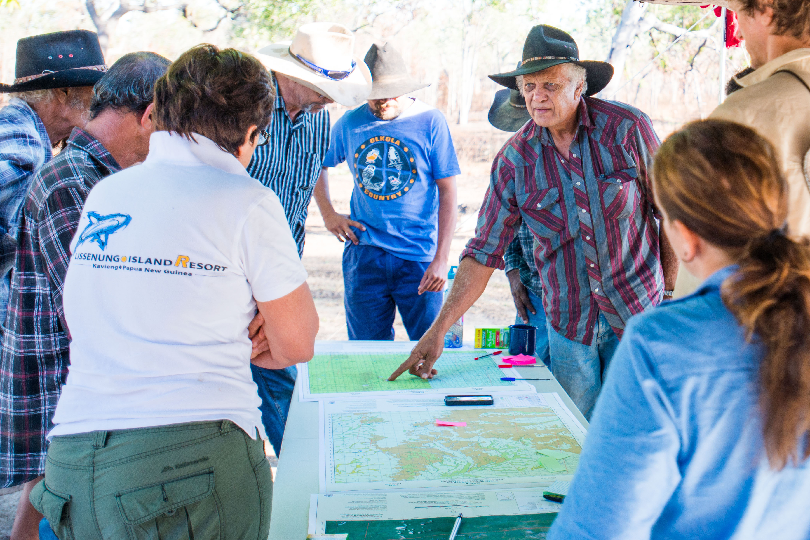
Mike Ross describing different places on Killarney station and their features to the CSIRO and TIEC visitors to their country.
On the first day of our camp we talked about the pilot project. CSIRO researchers introduced the Olkola rangers and knowledge holders to the ALA, and talked about how we would work together during the week. Afterward we travelled to a nearby lagoon and to Maryanne Yard, where Brian and John Ross told us about some of the uses and preparations of cultural plants on their country. The CSIRO researchers were introduced to Olkola traditional uses of the quinine tree, kurragong and the fine leaf tea tree. The next morning we gathered together at the camp to reflect on what we saw and heard. We talked about the plants and animals at each place, and discussed what knowledge sharing might mean, and what the risks and benefits for Olkola would be. We repeated this exercise every morning before each trip out to visit places on country and record knowledge.
Some of the animals we were introduced to by Olkola elders included: freshwater crocodiles, a yellow spotted monitor, and many birds including the black breasted buzzard, the endangered golden shouldered parrots, white-bellied cuckoo shrike as well as the feral pigs. Some of the birds and insects we saw were at sites where the rangers were burning on country.

Brian Ross describing how Olkola People use the wood of a tree to Gerry Turpin from TIEC.
On this visit, a few of the Olkola Traditional Owners were returning to their country after more than 20 years. John, who was on the camp, was last in Killarney mustering for the station owner in the 1980s, when he was in his teen years; he had not been to parts of Killarney previously. He described his return as “real comfortable… this country belongs to my ancestors. Now it’s all given back to us, make(s) me happy here”.
Two more meetings are planned where CSIRO researchers will present their findings to the larger Olkola community, and a third meeting where Olkola people will decide what will be shared and if so, how they would like to represent their country.
The Atlas of Living Australia currently supports two Indigenous Ecological Knowledge pilot projects, learn more about their story from previous articles:
Indigenous Ecological Knowledge: The Olkola People
First ALA records of elusive Leichhardt’s Grasshopper in Arnhem Land